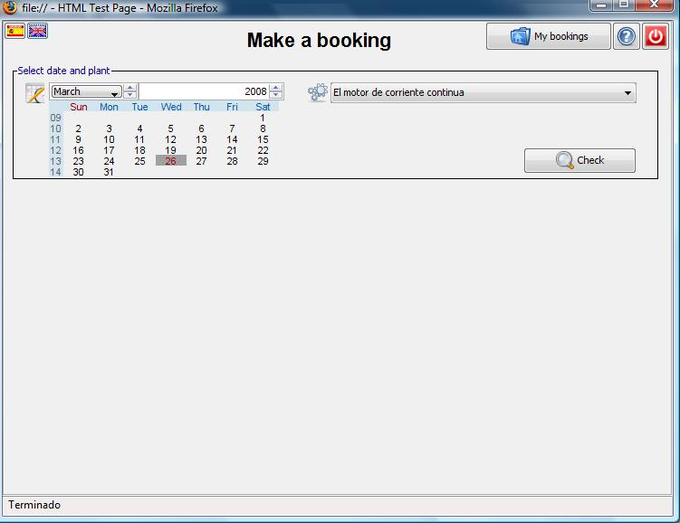
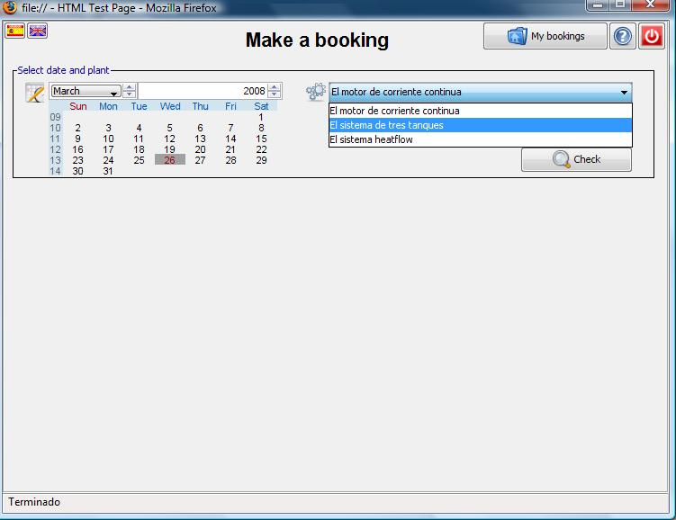
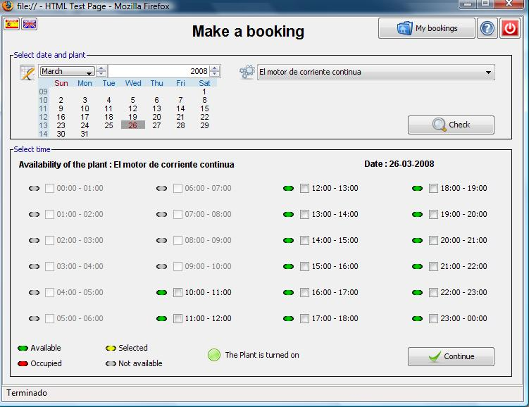
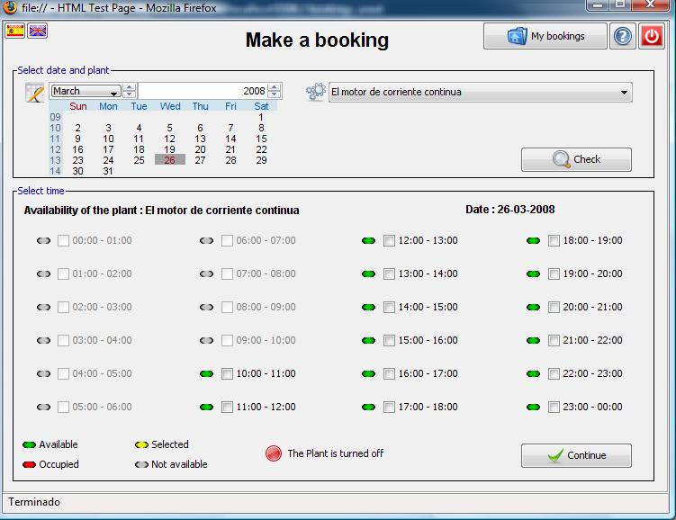
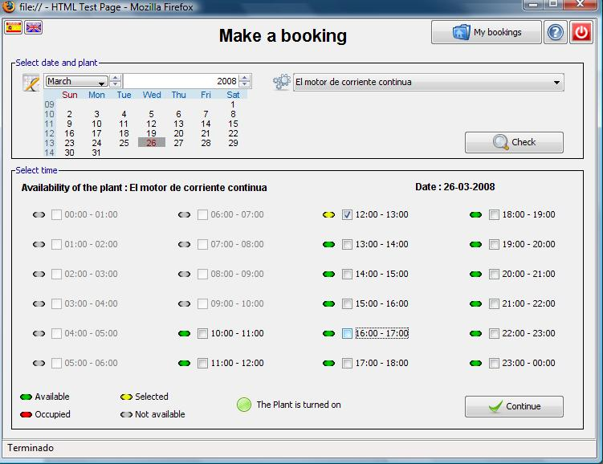
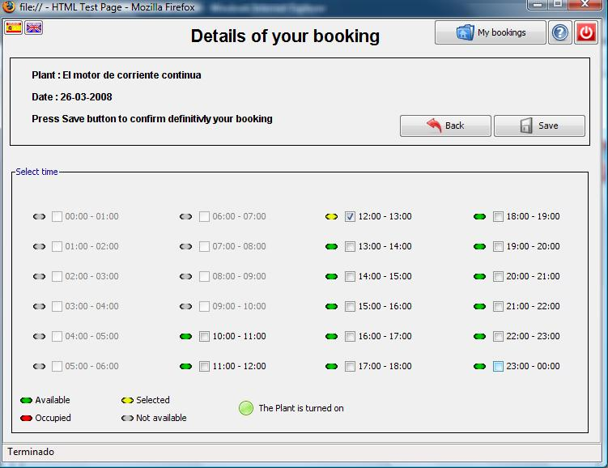
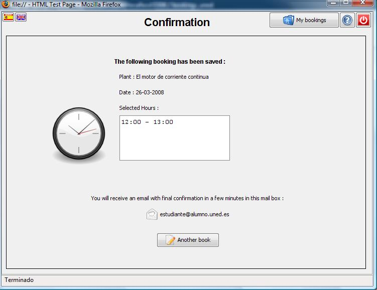
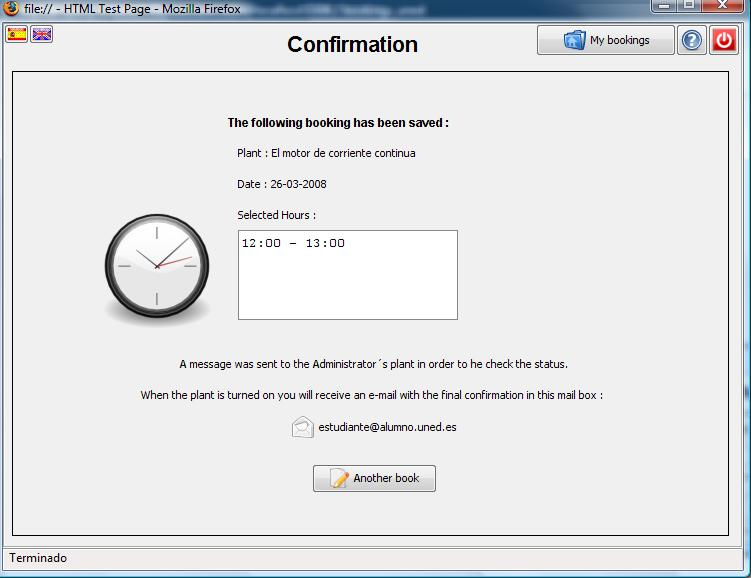

Bookings Laboratory
Make a booking
This is the first screen that you will see:

The buttons to select the language of the interface are at the left top corner.
The buttons to see your bookings, see this guide and log out are at the right top corner.
In order to make a booking you must select the date in the calendar and the plant, then you have to press the Check button

When you have selected the date, the plant and you have pressed the Check button the application shows you this screen:

The application shows you the hours to the selected day and its availability
· The hours that have a grey color means that are not available
· The green color means than these hours are available.
· The red color means that these hours are occupied by another student
· The color of the hour changes to yellow when you selected it, and turn to green when you unmark it.
Also you can see the state of the plant

If the plant is turned off, you also can make the booking. In this case the application will warn to the administrator of the plant.
Now, you must select the hours of the experiment and press Continue button

All students have asigned a maximum number of slots in the plant, in a week and in a day. If you have exceeded these limits you will receive a warning and you can not continue with the booking. Contact with your teacher to know these limits.

When you press the Continue button you see this screen, if you are agree with the selected hours press the Save button.
If you wish to add another hour to the booking select it.
If you don´t wish to continue with this booking press the Back Button.

When you press the Save button you see the confirmation screen:

In this screen you can see the plant and the hours of the booking, You will receive the final confirmation in your email address.
If at the moment of save the booking the plant was turned off the confirmation screen will be the following appearance:

You can also see the plant and the hours of the booking. The application tells you that the administrator of the plant has been warned. You will receive an email with the final confirmation when the plant is turned on.
If you want to make another booking press Another booking button.
If you want to see your booking list or delete a booking press My bookings button.